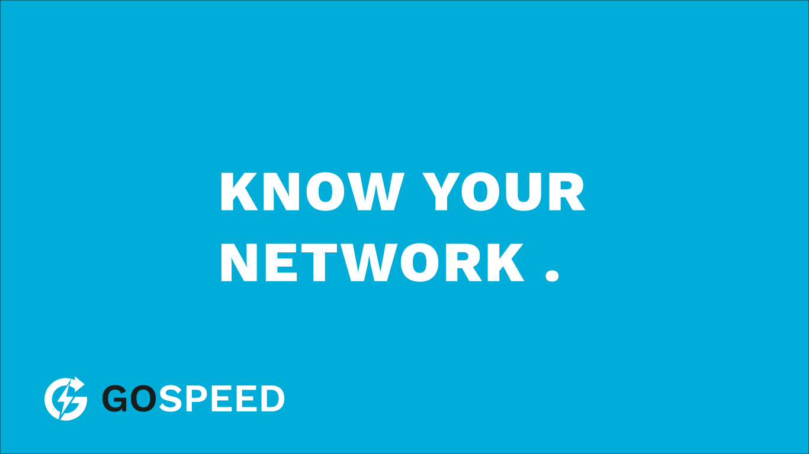

A fast, zero-dependency network speed testing tool written in Go. 9 test types, A-F quality grades, cross-platform.
Built for engineers who need accurate, repeatable network measurements.
Pure Go standard library. No external packages. Single binary, drop it anywhere.
TCP/UDP throughput, latency, jitter, bufferbloat (RPM), path MTU, DNS, TCP connect, bidirectional.
A-F letter grades for every metric with color-coded terminal output. Know your network quality at a glance.
Table, JSON, and CSV output. Pipe to jq, import to spreadsheets, or feed your monitoring stack.
Native support for Windows, macOS, Linux, and FreeBSD. No Cygwin, no WSL, no compromises.
Concurrent client support out of the box. Unlike iperf3, multiple users can test simultaneously.
Local JSONL storage tracks results over time. See how your network performance changes with --history.
Based on RFC 6349, RFC 2544, ITU-T Y.1564. BDP-aware TCP buffers, RFC 3550 jitter calculation.
Three TLS modes: auto-generated self-signed, your own certificates, or Let's Encrypt ACME with auto-renewal.
Comprehensive network diagnostics in a single run.
| Test | Protocol | What it measures | Key metric |
|---|---|---|---|
| Latency | TCP | Round-trip time (20 samples) | min/avg/p95/max ms |
| Path MTU | UDP (DF bit) | Path Maximum Transmission Unit | bytes |
| TCP Throughput | TCP | Bandwidth with BDP-aware buffers | Mbps / Gbps |
| UDP Throughput | UDP | Bandwidth + packet loss + reordering | Mbps, loss % |
| Jitter | UDP | Inter-packet delay variation (RFC 3550) | ms |
| Bufferbloat | TCP + UDP | Latency under load → responsiveness | RPM |
| DNS | UDP/53 | DNS resolution latency | ms |
| TCP Connect | TCP | SYN → established handshake time | ms |
| Bidirectional | TCP | Simultaneous upload + download | Mbps each |
Every metric gets a letter grade so you can quickly assess quality.
A modern alternative built for real-world network testing.
| Feature | gospeed | iperf3 |
|---|---|---|
| Concurrent clients | Yes | No (one at a time) |
| Windows support | Native | Cygwin-dependent |
| JSON output | Reliable | Broken with parallel/bidir |
| Bufferbloat detection | Built-in (RPM) | Not available |
| Unified metrics | Single run | Separate tools needed |
| Quality grading | A-F grades | Raw numbers only |
| Test history | Built-in trends | Not available |
| NAT-friendly | All client-initiated | Requires reverse mode |
| Dependencies | Zero | libssl, etc. |
Get running in under a minute.
curl -fsSL https://gospeed.goozt.org/install.sh | bash
irm https://gospeed.goozt.org/install.ps1 | iex
go install github.com/goozt/gospeed/cmd/gospeed@latest
curl -fsSL https://gospeed.goozt.org/install.sh | bash -s -- --server
irm https://gospeed.goozt.org/install-server.ps1 | iex
go install github.com/goozt/gospeed/cmd/gospeed-server@latest
git clone https://github.com/goozt/gospeed.git
cd gospeed
docker compose up -d
Common usage patterns to get you started.
Listen on default port 9000.
gospeed-server
Full test suite against a remote server.
gospeed -s host:9000 -a
Run only the tests you need.
gospeed -s host:9000 --latency --tcp
Machine-readable output for scripting.
gospeed -s host:9000 --json | jq .
See past results with trend indicators.
gospeed --history
Encrypted testing over untrusted networks.
gospeed -s host:9000 --tls
Adjust parallel streams for throughput tests.
gospeed -s host:9000 -t 8
Set server address once.
export GOSPEED_SERVER_ADDR=host:9000
gospeed
Quick encrypted server, no cert files needed.
gospeed-server --tls-self-signed
Use your own TLS certificate.
gospeed-server --tls-cert cert.pem --tls-key key.pem
Auto-provisioned ACME certificate.
gospeed-server --tls-acme --domain speed.example.com --email you@example.com
Client-server model with dedicated control and data channels.
Two ways to encrypt connections — self-signed for quick setups, ACME for production.
All available client flags and options.
| Flag | Description | Default |
|---|---|---|
-s, --server | Server address (host:port). Also reads GOSPEED_SERVER_ADDR env var | localhost:9000 |
-t, --streams | Number of parallel streams | 4 |
-d, --duration | Test duration in seconds | 10 |
-h, --history | Show previous results with trends | - |
-v, --version | Print version and exit | - |
--json | Output as JSON | - |
--csv | Output as CSV | - |
--tls | Use TLS connection | - |
--tls-skip-verify | Skip TLS certificate verification | - |
--ping | Check if server is reachable (5 retries) and exit | - |
Individual test flags to run specific diagnostics.
| Flag | Description | Default |
|---|---|---|
--ping | Check if server is reachable (5 retries) | - |
--latency | Unloaded latency (RTT) | - |
--mtu | Path MTU discovery | - |
--tcp | TCP throughput | - |
--udp | UDP throughput + packet loss | - |
--jitter | Jitter measurement | - |
--bufferbloat | Bufferbloat detection (RPM) | - |
--dns | DNS resolution latency | - |
--connect | TCP connection setup time | - |
--bidir | Bidirectional throughput | - |
-a, --all | Run all tests | - |
All available server flags and options.
| Flag | Description | Default |
|---|---|---|
-a, --addr | Listen address (host:port) | :9000 |
-h, --host | Specific host address | - |
-p, --port | Listening port | 9000 |
-v, --version | Print version and exit | - |
--tls-cert | TLS certificate file | - |
--tls-key | TLS key file | - |
--tls-self-signed | Use auto-generated self-signed certificate | - |
--tls-acme | Use Let's Encrypt ACME for certificates | - |
--domain | Domain name for ACME (required with --tls-acme) | - |
--email | Email for ACME account (required with --tls-acme) | - |
--cert-dir | Directory to cache ACME certificates | - |
--health | Start HTTP health check server on given port (GET /health) | - |
Version history and notable changes.
--ping flag for quick server reachability check with 5 retries-s, -h, -t, -d, -v, -a) for CLI.gitignore updated to include node_modulesids instead of builds for correct artifact referencing